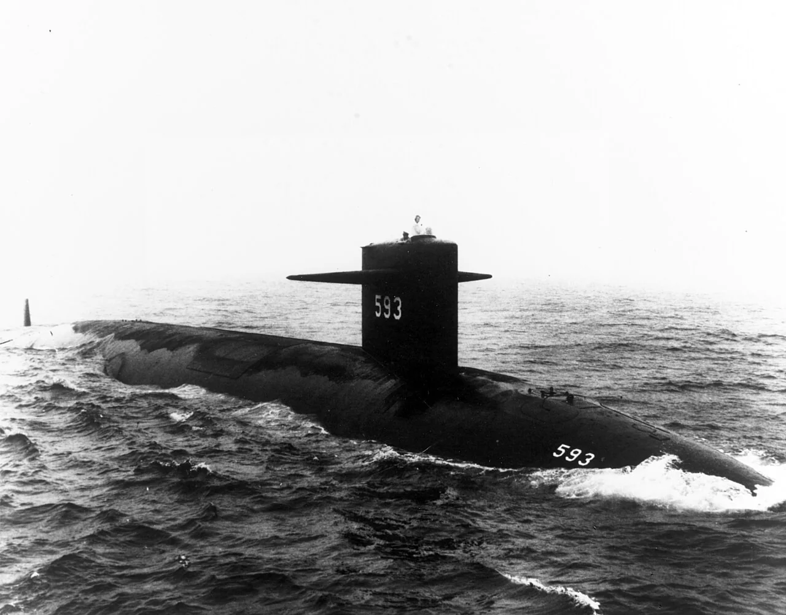
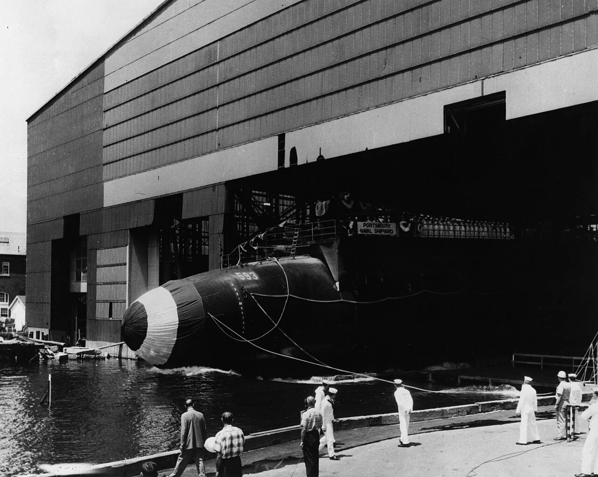

Nuclear History · 168
Only 145 of 3,000 Joints Were Checked — The Loss of USS Thresher (1963) and the Birth of SUBSAFE
A lost submarine taught the US Navy to stop trusting that work was done well and to demand proof that it was.
On 10 April 1963 the nuclear attack submarine USS Thresher was lost with all 129 people aboard during a deep test dive off New England. The Navy has never fixed the exact cause, but its most probable account begins with a failed silver-brazed seawater joint, at a time when only 145 of some 3,000 such joints had been ultrasonically tested. Within two months the Navy created SUBSAFE, a programme built on one rule: no objective evidence, no certification.
Three numbers
Start with three numbers: 3,000, 145 and 14. The US nuclear submarine Thresher (SSN-593) carried roughly 3,000 silver-brazed piping joints that had to hold back the full pressure of the deep sea. During her last shipyard period, 145 of them were examined with a new technique, ultrasonic testing. Fourteen percent of those failed to meet the standard. The other 2,800 or so went to sea without anyone having looked inside them that way. The date was 10 April 1963. [1]
Fast, quiet and deep
Thresher was the first ship of a new class of attack submarines. Built at Portsmouth Naval Shipyard in Kittery, Maine, she was launched on 9 July 1960 and commissioned on 3 August 1961. The Navy would later describe her as the leading edge of US submarine technology: "fast, quiet and deep diving." Her test depth is usually given as about 1,300 feet (some 400 metres). [2]

Fresh from a shipyard overhaul, she put to sea again on 9 April 1963. The next day, under Lieutenant Commander John Wesley Harvey (1928–1963), she began deep-diving trials about 190 nautical miles (350 km) east of Cape Cod. On the surface, the submarine rescue ship USS Skylark followed her, talking to her by underwater telephone.
The 9:13 message
The descent began at about 7:47 a.m. According to the reconstructed record, at around 9:13 Skylark received a garbled message to the effect that Thresher was "experiencing minor difficulties," had a "positive up-angle" and was "attempting to blow," meaning she was trying to force water out of her ballast tanks with compressed air in order to rise. A few minutes later came a final fragment in which the words "test depth" could be made out. Men aboard Skylark reported hearing a sound "like air rushing into an air tank." Fifteen ships joined the search, and on 11 April the Navy declared Thresher lost. [3] [4]
All 129 people aboard died: 112 naval personnel (16 officers and 96 enlisted men) and 17 civilians, many of them shipyard technicians. Arlington National Cemetery calls it the deadliest accident in submarine history. The wreckage lies scattered on the seabed at a depth of about 8,400 feet (some 2,560 metres).
"The exact cause is not known"
The Navy's Court of Inquiry produced 166 findings of fact, 55 opinions and 19 recommendations. Even so, the Navy still says plainly that the exact cause of the loss is not known. What it offers instead is a most probable sequence. One or more silver-brazed joints in a seawater system failed and the engine room began to flood. Spray shorted out electrical equipment, the reactor shut down and the boat lost propulsion. The last resort, an emergency blow of the main ballast tanks, delivered too little air, because moisture in the air system froze and blocked the piping. [1]
One common misconception deserves a correction here: Thresher was not a reactor explosion or a radiation accident. In the Navy's account, the reactor shutdown was a consequence of flooding and short circuits; the root problem lay in the piping and in the way it was inspected. Not everyone accepts the official sequence. In 2013 the acoustic analyst Bruce Rule argued, from underwater sound recordings made at the time, that an electrical failure came first rather than a burst pipe. After a freedom-of-information lawsuit, the Navy began releasing the inquiry records in stages in 2020, and the discussion continues. [4]
![Two-panel infographic. Left: a grid of 145 small spheres, about 20 of them orange for joints that failed ultrasonic testing (14 percent), above a bar showing that 145 tested joints are only about 5 percent of roughly 3,000 silver-brazed joints, with a note asking whether more than 400 could have been substandard. Right: the Navy's four-step account of 10 April 1963: joint fails and the engine room floods; seawater causes electrical shorts and the reactor shuts down; the emergency blow falls short because moisture freezes in the air piping; the submarine cannot surface. A note mentions the alternative electrical-failure analysis by B. Rule, 2013](../../assets/images/history/168-thresher-subsafe/fig1-brazed-joints.webp)
Admiral Hyman G. Rickover, head of the Navy's nuclear propulsion programme, reportedly told Congress that the loss should not be seen simply as the failure of one braze, weld or component, but as a consequence of the "philosophy of design, construction and inspection" that had been allowed in naval shipbuilding.
Not "we built it well," but "show us the evidence"
The Navy immediately restricted how deep all its submarines could dive. In June 1963, not quite two months after the loss, it created the Submarine Safety Program, SUBSAFE, and on 20 December 1963 it formally issued the certification criteria that put it into effect. (Some accounts therefore date the programme to December.) Its aims were deliberately narrow: a hull that stays watertight, and the ability to recover to the surface in an emergency. Fire, weapons and reactor safety belong to other programmes. [1]
The method was to prove every piece of work in four areas: design, material, fabrication and testing. The Navy calls the proof "objective quality evidence," and its rule is blunt. In the words of its 2003 testimony to Congress: "Without objective quality evidence there is no basis for certification, no matter who did the work or how well it was done." Over the next eleven years the criteria were changed 37 times before being codified in a requirements manual in 1974.

A record, and a memorial
By the Navy's own count, the United States lost 16 submarines to non-combat causes between 1915 and 1963, roughly one every three years. Since SUBSAFE began, it has lost one: Scorpion, in 1968, which had not been SUBSAFE-certified. "We have never lost a SUBSAFE certified submarine," the Navy told Congress in 2003; that is the Navy's own assessment. That hearing took place after the loss of the space shuttle Columbia, as the House Science Committee looked at what NASA might learn from the programme. [1]
On 26 September 2019 a memorial was dedicated at Arlington National Cemetery to "the 129 men lost aboard USS Thresher (SSN-593) and their SUBSAFE legacy." [2]
